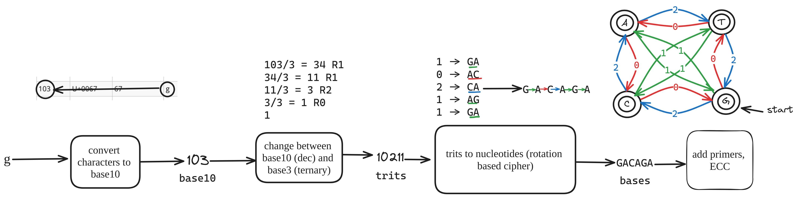

Enhancing DNA Storage with Synthetic Biology: Software
UBC iGEM
Project Description
Our project aims to tackle the growing need for a better, more energy-efficient data storage medium compared to current magnetic and optical data storage options by means of synthetic biology. Currently, we aim to achieve this through 2 separate tracks:
Developing an enzymatic DNA synthesis platform that can elongate a single-stranded DNA (ssDNA) in a template-independent manner. The synthesized ssDNA strand will then be converted to a more stable, double-stranded DNA (dsDNA) and inserted into a plasmid for long-term data storage.
Developing a data encoding/decoding pipeline that allows binary files (used by computers) to be stored in a ternary format compatible with our DNA synthesis platform, retrieved, and converted back into binary.
Goals
In Silico:
Demonstrate ability to encode and decode information someone may store in long-term storage, in the 1000s of nucleotides long.With wet lab:
Demonstrate ability to encode and decode a 100 nucleotide sequence with 30% error.Plan
DBTL 1: March to April
Implement a barebones pipeline, and see how much error can be tolerated in 100 nucleotide long DNA sequences with in silico testing.
DBTL 2: April to May
Redefine algorithms to tolerate up to 30% error in 100 nucleotide long DNA sequences, with in silico testing.
DBTL 3: May to June
Implement DNA Storage Alliance specifications, and do in silico testing on DNA sequences with 1000s of nucleotides.
DBTL 4 and 5: June to July
Test our software on sequences synthesized by wet lab, and redefine algorithms with in silico testing and wet lab data.
DBTL 1: Components
1. Encoding
2. Error Correction
3. Decoding
4. ChaosDNA
Encoding
- Primer Generation
- Sequence Generation
Why generate our own primers?
- act as unique identifiers for information
- required for PCR amplification
- specify requirements for TdT enzyme
How? Using a genetic algorithm.
Why use a genetic algorithm?
- type of optimization algorithm
- uses a set of constraints to produce heuristics to determine best parent candidates, which go on to produce children population
Primer design fits this description!
Example: two chosen parents
Schematic

Code
Sequence Generation
Binary to Nucleotides
Some limitations...
- short strands (100 nt)
- semi-specific synthesis
- high rate of deletion errors (30%)
Short strands?
Blocked data and conversion to ternary
Part 1: proposed encoding scheme
Short strands?
Text Compression
Short strands?
Vector Data Formats
TODOSemi-specific synthesis?
Rotation based cipher
Rotation based cipher: One char
High rate of deletion errors?
For the first iteration, we want to see what percentage of deletion errors we can correct for with minimal error correction. Some ways of resolving deletion errors include:
- synthesizing shorter sequences (more blocks of shorter length)
- more complex encoding methods
- more complex error correction methods (inner and outer codes)
- choose the most stable DNA strand (starting nucleotide) based on thermodynamic properties
- collect metadata and generate a checksum, to be used to sysematically resolve deletion errors